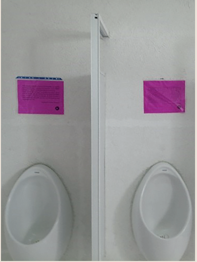

Micción lectora
Mtra. Mariana Martínez García
Sección:: Escaparate: La voz de la comunidad

Fomentemos la lectura desde un lugar fuera de lo común: el baño. Así nació Micción Lectora,
iniciativa que busca crear lectores no en abstracto, ni de manera asocial o aislada, sino
inscritos en el contexto académico del Centro Multimodal.
La micción es el acto de expulsar la orina. En promedio, pasamos entre dieciséis y veinticuatro
minutos en el sanitario, ¿por qué no aprovecharlos para leer? Micción Lectora coloca un fragmento
distinto en la puerta de cada W.C. o arriba del mingitorio, a la altura de los ojos, con el fin
de estimular la lectura mientras se hace uso del sanitario. En consecuencia, el baño se vuelve
el detonador de una lectura gozosa; de paso, se rompe con la narrativa de superioridad intelectual
de “los que leen”; le quita solemnidad a la literatura, bajándola del pedestal al que la escuela la eleva.
Micción Lectora es una especie de periódico mural ubicado en los baños de la escuela. El primer
mensaje es una bienvenida colocada en los espejos de los sanitarios. Cada mes hay una nueva entrega
con un contenido temático específico: poesía LGBTTTIQ+, coplas de letrina, terror y horror, etcétera.
Si bien los textos mantienen unidad en el tema, varían en cada WC o mingitorio, por lo que para leer
todos los extractos literarios, se debe visitar cada sección a lo largo de un mes. De este modo, los
sanitarios son espacios de lectura donde la comunidad estudiantil, y demás personal académico, hallan
mínimas vertientes literarias.
El proyecto no deja de enseñar y se reinventa en su desarrollo, ya que se vincula con otra
actividad que permite conocer su impacto: un club de lectura donde muchos de los fragmentos se
retoman a solicitud de quienes lo integran. Los lectores buscan saber de qué trata la historia;
con ello comienzan a desarrollar un hábito literario. Micción Lectora, entonces, no se queda únicamente
en mingitorios y W.C. También he visto que no sólo el estudiantado, sino el personal de mantenimiento
se ha acercado para saber cómo consultar los textos completos, o resolver dudas del significado de
alguna palabra dentro del texto que se publica.


A partir de estas experiencias, mi función docente se ve atravesada por repensar y resignificar la lectura fuera de la academia. Porque la lectura también es un espacio que permite crear otra narrativa y cuestionar la realidad que hemos asumido como única. Considero que quienes están en la adolescencia es importante darles a conocer que existen otras historias y que su propia historia también importa, así como ha habido alguien allá afuera que ha escrito un texto que logra interpelarlos. Sin duda, sé que el proyecto contribuye al ejercicio del derecho a leer cualquier cosa y el derecho a leer lo que te gusta, sin que ello invalide la lectura a partir de los discursos clasistas y etnocentristas. Por el contrario, acerca la lectura desde el derecho a leer en cualquier parte, como el baño, y el proyecto siempre persigue ser una ventana de oportunidad para el aprendizaje y la creación de lectores gozosos.
Ángel Escudero, en su libro El duelo en México, recuerda que el poeta veracruzano Salvador Díaz Mirón,
entre las múltiples causas por las que se batió a duelo, se encuentra que defendiera de las burlas los
versos que puso en el baño, durante el tiempo en que trabajó en un banco. Y el cronista Artemio de Valle
Arizpe, en su Anecdotario de Manuel José Othón, una obra cumbre de la calumnia, refiere la estrofa que
se le ocurrió a Othón en una ocasión en que no encontraba el papel sanitario… Reproducimos estos poemas
esperando no desdorar a estos dos grandes poetas (o que a lo mejor lo son porque tenían versos para
todas ocasiones).
I
El que venga aquí a orinar y disfrute tal merced, deberá siempre cuidar de no ensuciar la pared porque esto no es muladar.
Salvador Díaz Mirón
II
Ando buscando un papel para limpiar mis despojos; traigo abiertos mis tres ojos y no puedo dar con él.
Manuel José Othón